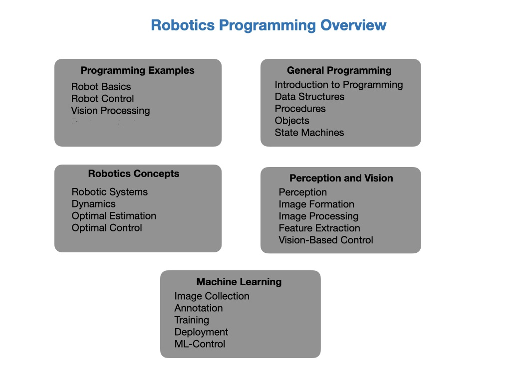
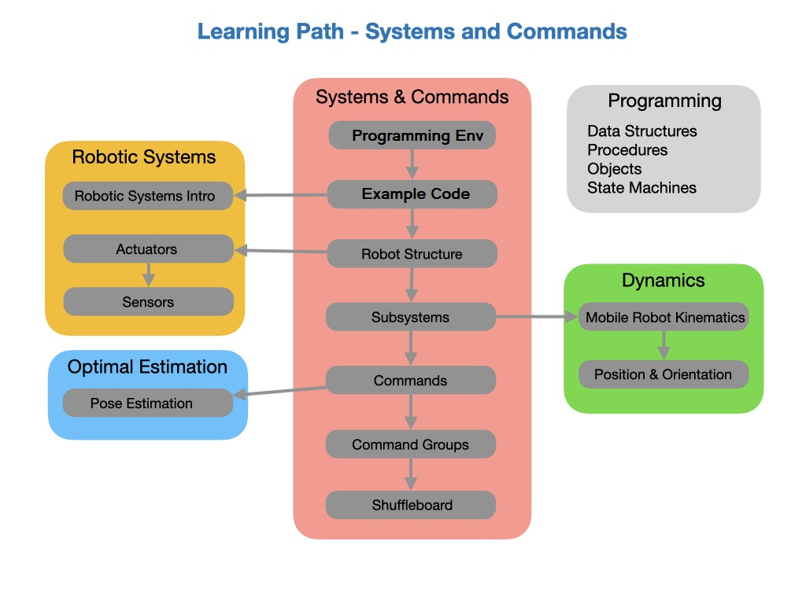
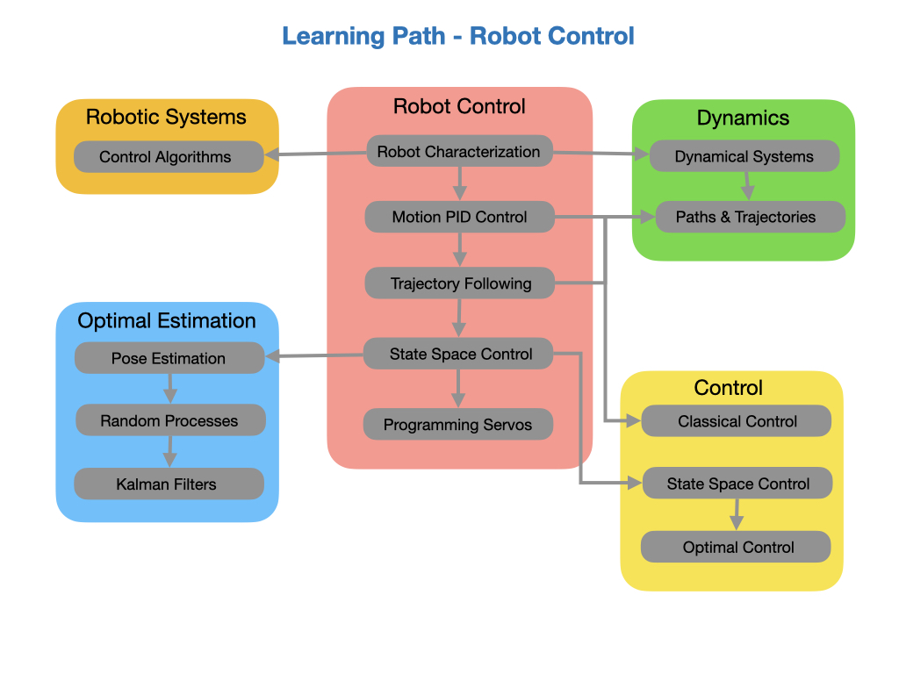

Overview
In the early days of computing, there was no internet to look up programming instructions or how to code a particular function. Programmers only had printed manuals to research information. The best two manuals at the time were the reference manual and the programmers guide.
Reference manuals typically contain the ‘how’ to do something. They give you the syntax or format of what you need to accomplish or what options are available. Today’s internet addresses this need very well. You can certainly Google a specific instruction and get lots of anwsers.
However, the programmers guide addressed the ‘why’ you did something in a particular way. The internet does not address this topic very well. Yes, you can find code that shows what other teams have done, but you do not get an understanding of ‘why’ they did it that way. That is what this document attempts to address, it is our version of a Programmers Guide.
This site hosts resources for programming teams involved in the First Robotics Competition (FRC). Is serves both to train new members to the programming team and serves as a reference on ‘how’ the team wants things done. It shows new team members on ‘how’ they should develop code for the robot, what structure is expected and tries to spell out ‘why’ we are doing it that way. The aim is to give the student a good grounding in both robotics and programming.
The purpose of the document is to take you step-by-step through the process of becoming an FRC programmer. And then giving you a single place to look up reference material, programming tips, development tools and techniques that will assist you on your journey. This will prepare you to write code for the competition robot that your mechanical and electrical engineering teams will build. In order not to duplicate information that already exists there are plenty of references to the FIRST Robotic Competition documentation.
The subjects that will be covered in this document will include:
First, we’ll start out setting up a development environment on your laptop so that you will have something to train with. Next, we’ll move on to the main learning path using Robot Simulation. And finally, as you advance, we’ll move on to the Sweet Bench and the Programming Team Camera Robot and finally the Competition Practice Bot. From there we’ll link to other parts of the programming resources.
 Acknowledgement
This document was inspired by the public Read-the-Docs document developed by FRC 2928. Rather than ‘re-invent the wheel’, some of this documents content comes directly from the orginal FRC 2928 document. The author greatly appreciates all the work that FRC 2928 has accomplished and thanks them for giving us somewhere to start.
References
Controls Engineering in the FIRST Robotics Competition - Tyler Veness
Robotics, Vision and Control - Peter Corke
Mobile Robotics - Alonzo Kelly
W3Schools - Java Tutorial
FRC 2928 Document - Read-the-Docs